장치 권한을 차단하신 경우
재설정할 수 있는 방법을 안내드립니다.
재설정할 수 있는 방법을 안내드립니다.
장치 재설정을 아래와 같이 진행해 주세요.
-
1. 설정 을 탭합니다.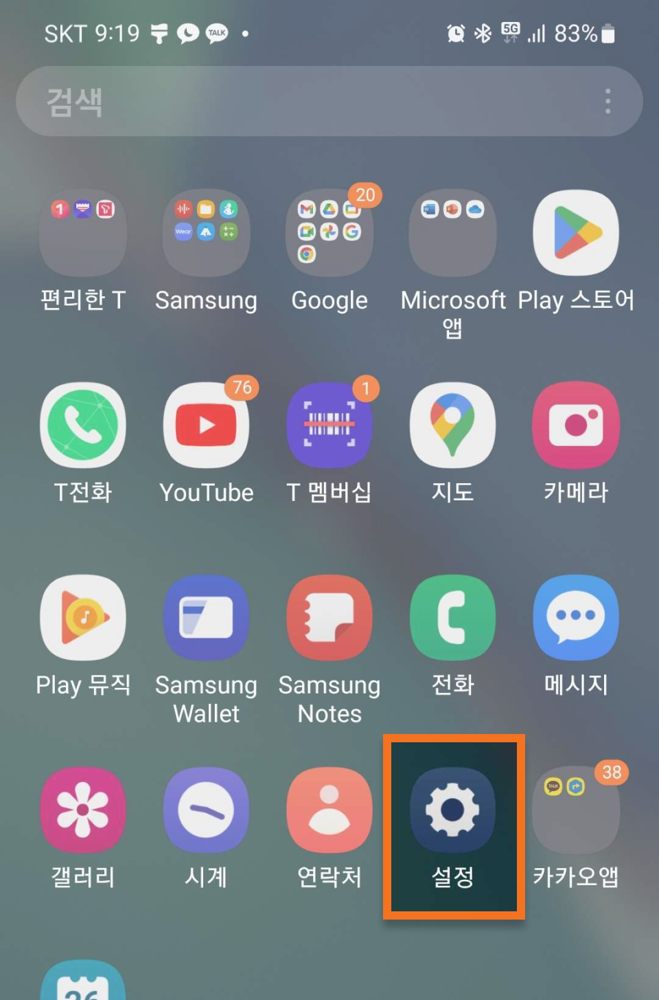
-
2. 어플리케이션을 탭합니다.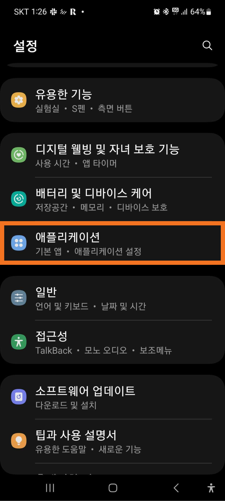
-
3. 상단 메뉴에서 버튼을 탭하고 권한 관리자를 탭합니다.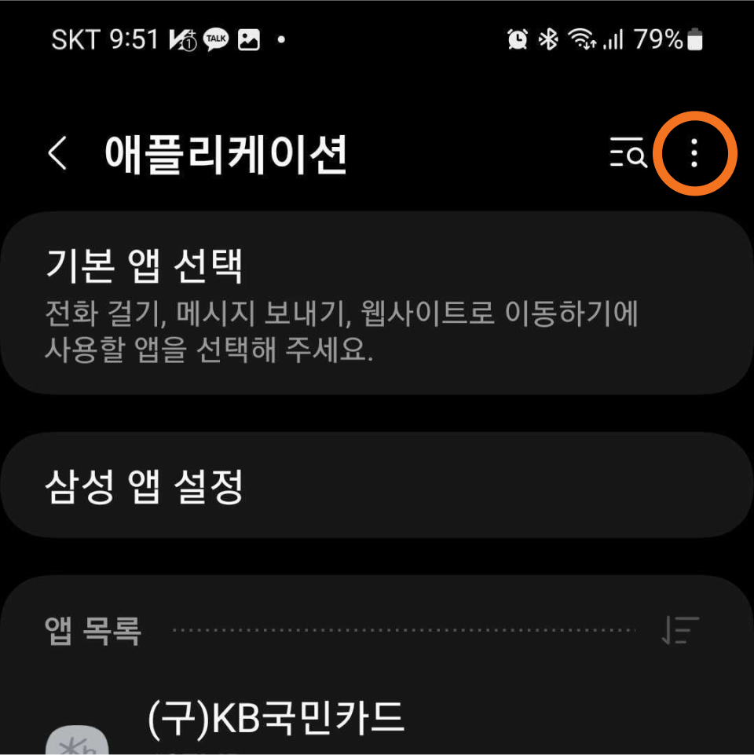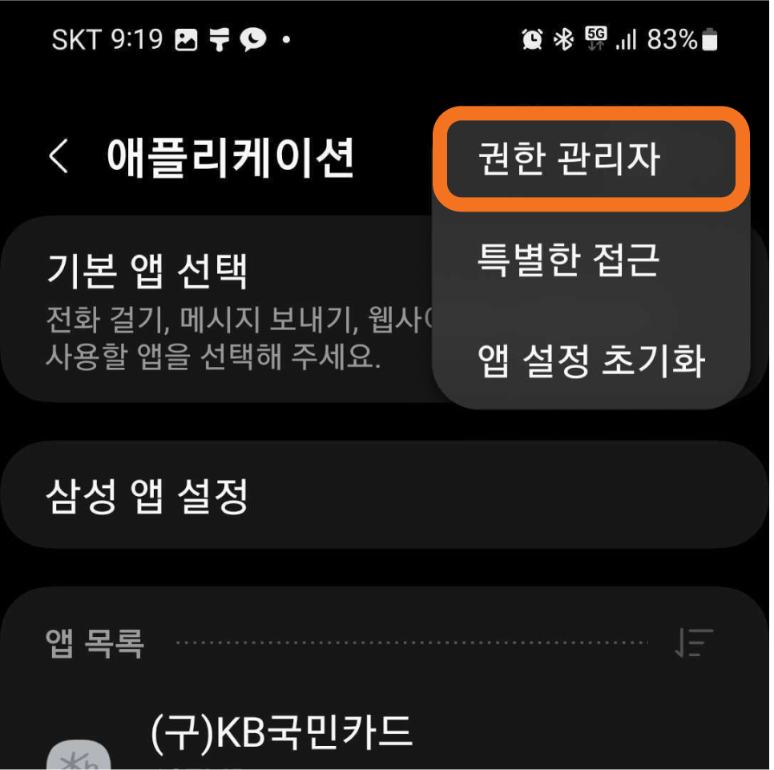
-
4. 마이크를 탭합니다.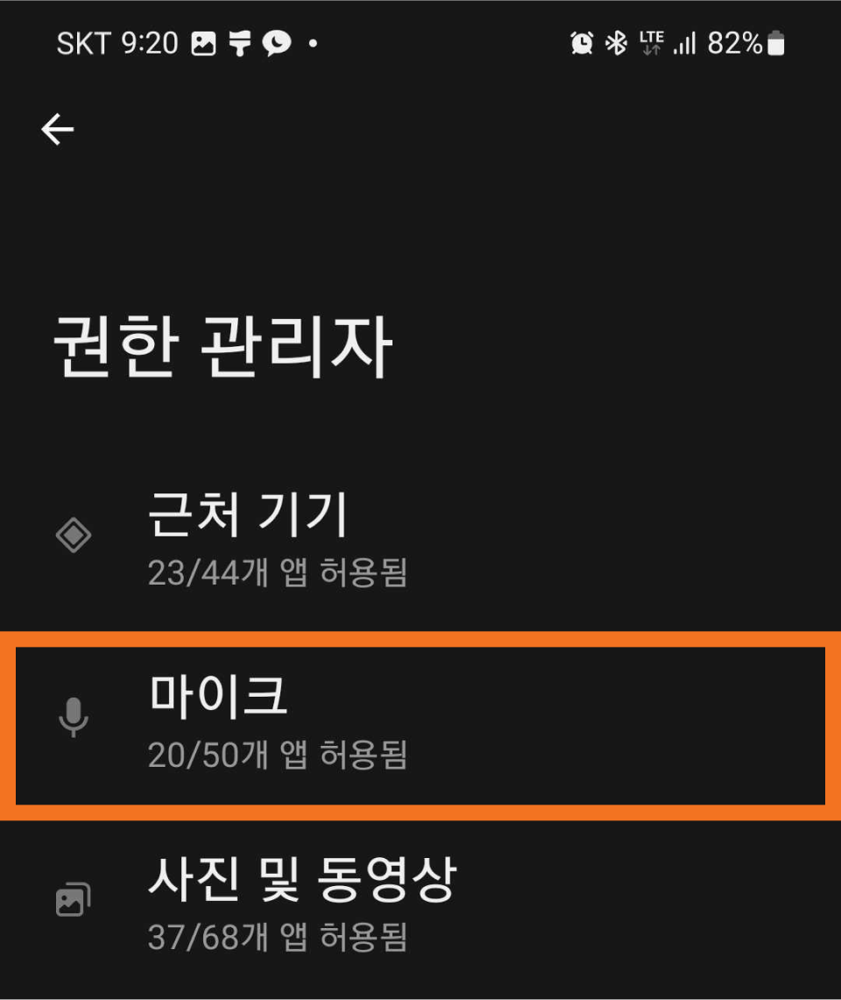
-
5. Chrome 을 탭합니다.

-
6. 항상 확인을 선택하고 상단 왼쪽 버튼을 탭하여 종료합니다.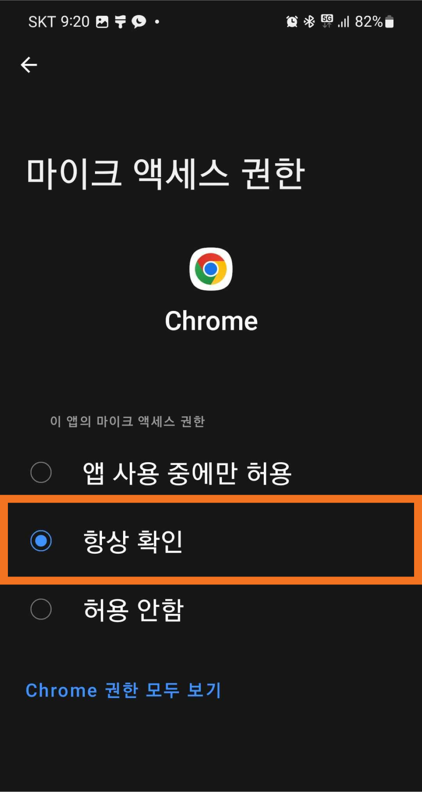
-
7. 카메라 권한도 4번 단계에서 카메라 탭 후 5,6번을 동일한 방법으로 진행하시면 허용됩니다.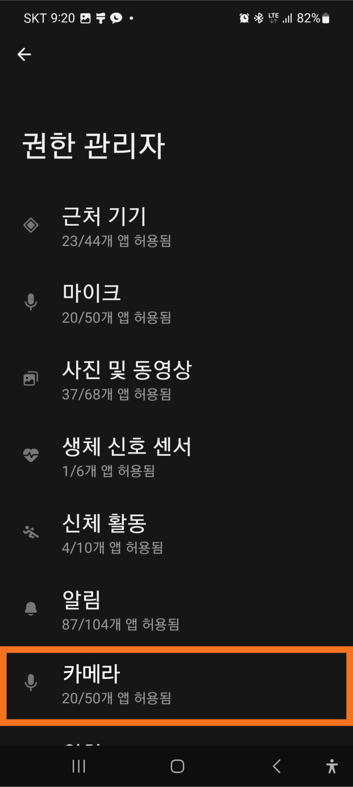
-
1. 설정 을 탭합니다.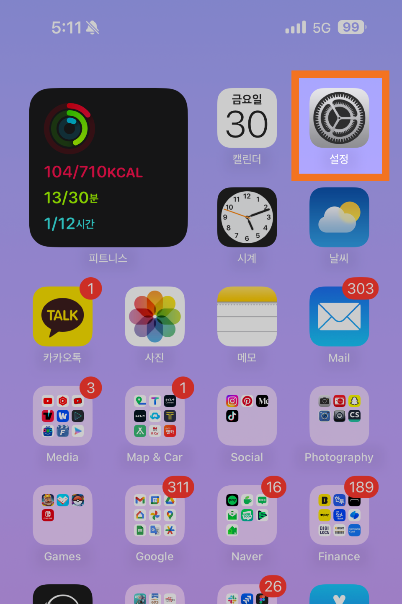
-
2. 개인정보 보호 및 보안 을 탭합니다.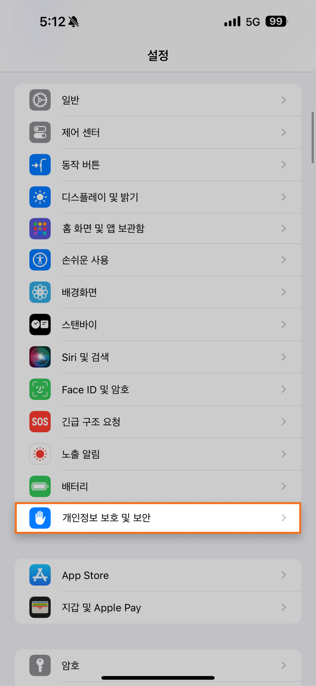
-
3. 마이크 를 탭합니다.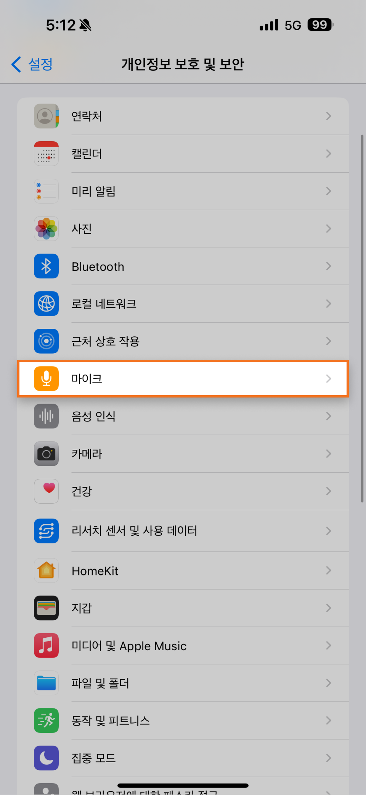
-
4. Chrome 항목 오른쪽에 있는 버튼을 탭하여 아래 그림과 같이 활성화 상태를 확인합니다.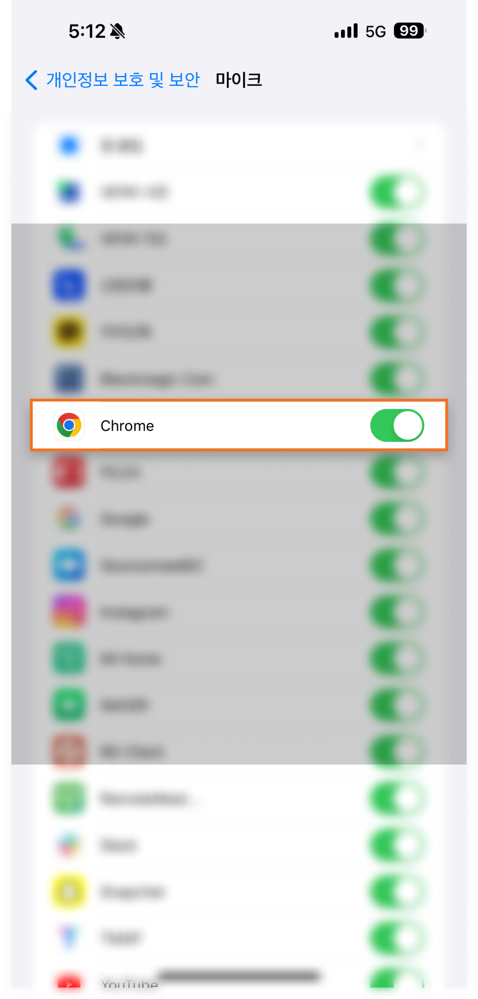
-
5. 다시 개인정보 보호 및 보안 화면으로 돌아와서 카메라 를 탭하여, 위 4번과 동일한 방법으로 진행합니다.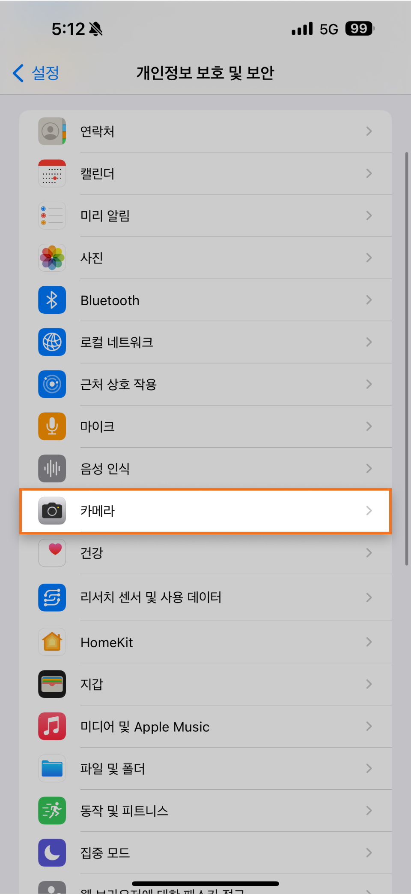
모바일 화상상담 고객센터 번호 안내
051.669.6905
032.329.9585